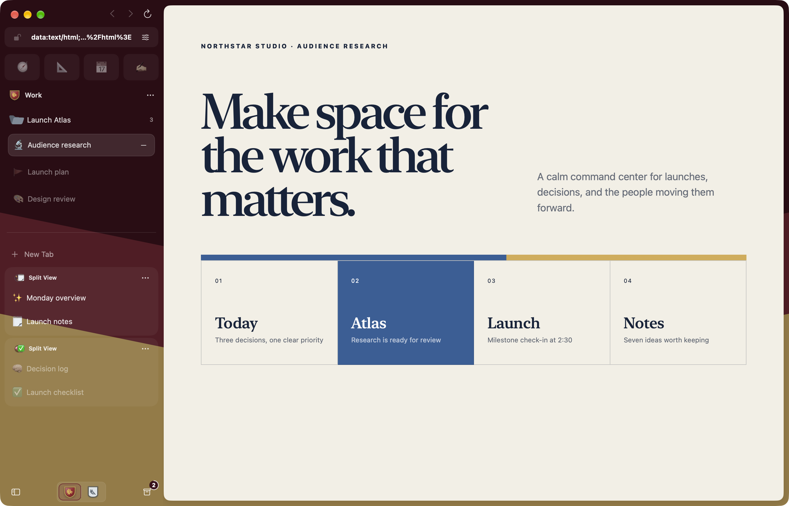
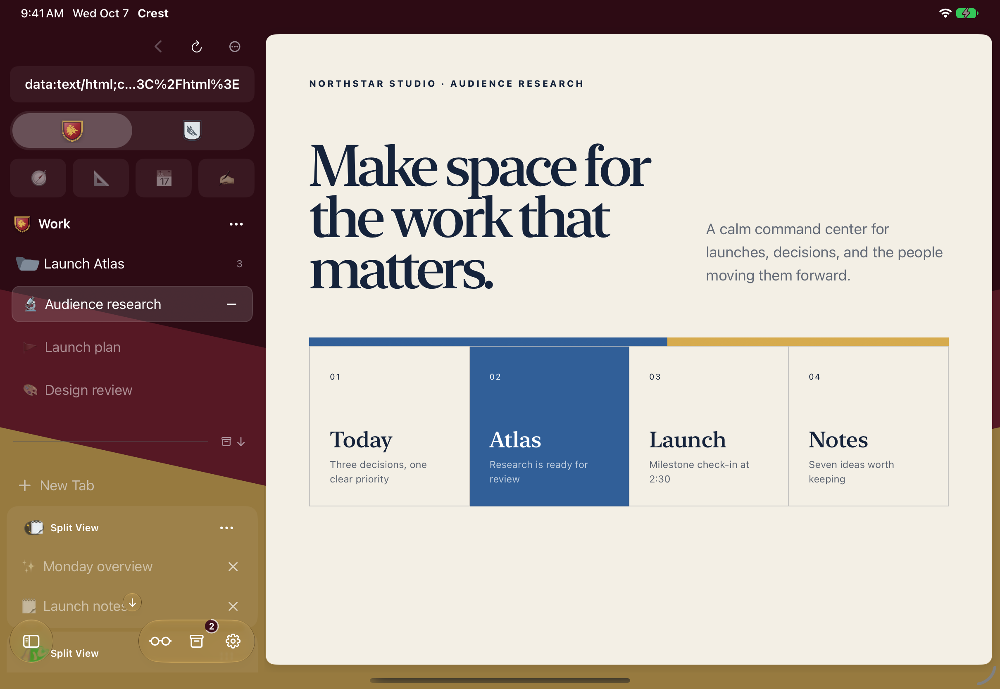
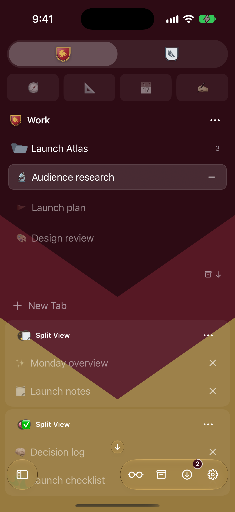
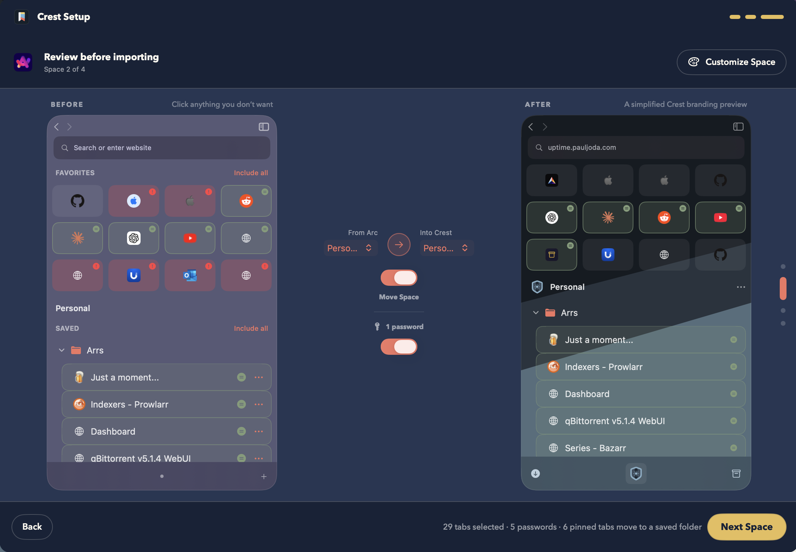

The browser for life after Arc.
Spaces, a sidebar, Peek, and Split View. Native on Mac, iPad, and iPhone.
Early access. Security not independently audited. MPL 2.0. Not affiliated with Arc.
Pick your look.
Heraldic shows every control. Modern and Simple show fewer.
Make it yours.
Every Space has its own look. Here is some of what you can change.
Crest Studio. Shape, field, band, emblem, border, and finish.
Modern. Color sets as gradients, in any direction.
Simple. One color and an icon.
Light or dark. Or follow the system.
Sidebar on either side.
Tab size and spacing. From Thin to Large.
Icons or dots. A group’s Spaces stay together.
A style for each Space. Or one for all of them.
Many banners, one sign-in.
Sub-Spaces share sign-ins, history, passwords, and extensions, like Spaces on one Arc profile. Each keeps its own tabs and colors.
Sub-Spaces guide →Coming from Arc?
The features you used, some with new names.
Full list
| Arc | Crest |
|---|---|
| Spaces | Spaces |
| Profiles | Sub-Spaces |
| Sidebar | Sidebar |
| Favorites | Pinned sites |
| Pinned Tabs | Saved tabs |
| Folders | Saved folders |
| Command Bar | Command palette |
| Air Traffic Control | Link Routing |
| Split View | Split View |
| Peek | Peek |
| Little Arc | Quick Window |
| Auto Archive | Space cleanup + Archive |
| Recent Tab Switcher | Most Recent Tab |
| Custom Keyboard Shortcuts | Rebindable shortcuts |
| Developer Mode | Developer tools |
| Site Control Center | Site Controls |
| Extensions | Extensions per Space |
| Incognito | Private Spaces |
| Space Themes | Crest Studio + gradients |
| Arc Sync | iCloud sync |
| Library | History, Archive + Downloads |
| Import from Another Browser | Import |
What Crest adds.
Three styles
Heraldic, Modern, or Simple, for the app or for one Space.
Crest Studio
Shape, field, band, emblem, border, and colors for each Space.
Two enginesMac
Chromium, plus WebKit per site.
iPhone and iPad
The same Spaces, tabs, and folders, synced through iCloud.
Coding agentsMac
Agents you run can use the Spaces you allow.
Ad blocking
Built in, on Mac, iPhone, and iPad.
Super Copy
Copies and shares links without known trackers.
Open source
MPL 2.0, on GitHub.
Mac, iPad, and iPhone.



Chromium and WebKit, Chrome extensions, and Split View.
The sidebar beside the page, with resizable Split View.
Full-screen pages, with the sidebar a swipe away.
Spaces, tabs, and folders sync through iCloud.
Bring your browser with you.
Import on Mac. Review each Space before anything moves.

ArcSpaces, tabs, folders, colors, icons, passwords
ZenSpaces, Essentials, pinned tabs, folders, colors
ChromeProfiles, bookmarks, open tabs, passwords
SafariBookmarks, windows, open tabs
FirefoxWindows, open tabs, pinned tabs
Also in Crest
ExtensionsMac
From the Chrome Web Store, per Space. More
Crest Passwords
In the Keychain, matched per Space.
Private Spaces
Nothing kept. Optional Face ID or Touch ID lock.
Site permissions
Remembered per site and Space.
Translation
Whole pages, on device.
Reader
On iPhone, iPad, and WebKit pages.
Media
Now Playing and Picture in Picture.
Organize
Move tabs and folders together.
Developer toolsMac
Viewports, Console, and Network.
ShortcutsMac
Rebind any command.
Space cleanup
Archive tabs after 12 hours to 30 days.
Downloads
Pause and resume on Chromium.
Page tools
PDF, web archive, and Markdown links.
Keep Loaded
Stops a page from unloading.